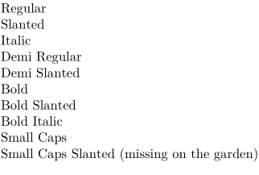
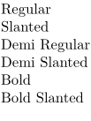
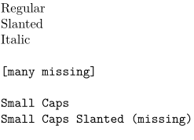

< Wishes for Latin Modern | Fulfilled or rejected wishes for Latin Modern >
- A presentation by Bogusław Jackowski (may we copy description of the fonts from there?)
- CTAN , see also Cont-lmt.zip
See Text_blocks and basics of text formatting
| TODO: install fonts on garden; do a more fancy table (and without "low-level" font commands, but preserving font name somewhere in the table), perhaps sample text with ligatures and diacritical marks as well; perhaps add available sizes somewhere in the table as well (See: To-Do List) |
Serif (rm)
- 
Sans (ss)
- 
Typewritter (tt)
- 